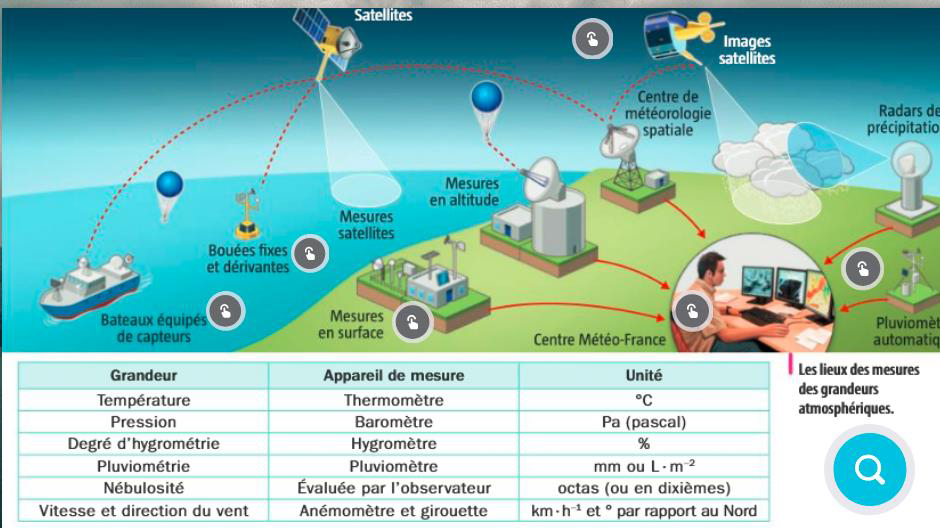

Dans le langage courant la distinction entre météo et climat est souvent brouillée. Pourtant, ceux sont les objets d’études de deux domaines scientifiques différents : la météorologie et la climatologie. Il est important de rappeler les différences entre les deux car autrement il est facile de tomber dans le climatoscepticisme qui conduit à croire que les changements constants de la météo permettent de nier le dérèglement climatique.
Appuyez ici pour avoir une vidéo vous montrant l'évolution annuelle des températures depuis 200 ans
Les mêmes paramètres atmosphériques sont mesurés pour être utilisés en météorologie et en climatologie.

Cependant, les mesures se font sur des échelles de temps et de surfaces différentes et c’est là que se fait la principale distinction entre climatologie et météorologie. Ainsi, pour la climatologie on étudie ces paramètres sur plusieurs années et sur une surface géographique étendue. On considère qu’on peut parler d’un climat quand on remarque des similarités suffisantes dans les paramètres atmosphériques sur cette surface et ce pendant au minimum 30 ans. Pour la météorologie c’est l’inverse : les échelles de temps et de surface sont bien plus réduits. Les météorologues peuvent mesurer les paramètres atmosphériques à un instant précis et les transmettre directement au public, ils peuvent également utiliser ces paramètres pour prédire à court terme comment ils vont évoluer.
Pour établir le climat d’une région, d’un pays voire même de la Terre entière sur plusieurs années, il faut forcément faire des moyennes car les paramètres atmosphériques varient dans l’espace et dans le temps. À l’inverse pour la météorologie, on cherche à connaître les paramètres atmosphériques actuels ou prochains précisément, il faut donc se limiter à une surface et une période de temps restreintes.
Pour comprendre plus facilement on peut prendre l’exemple de la ville de Maurepas. D’après Accuweather, le jeudi 27 janvier 2022 il est prévu qu’il fasse 6°C dans l’après midi, avec un ciel nuageux, un risque de pluies éparses et un vent de 11 km/h. On voit ici que les paramètres atmosphériques sont relativement précis sur une surface et une période de temps réduites. Il s’agit donc ici du domaine de la météorologie. Mais on peut aussi s’intéresser à la ville de Maurepas du point de vue de la climatologie, on remarque alors qu’on peut l’inscrire dans le climat de la région Île de France qui est caractérisé par une modération, entre des influences océaniques et continentales. D’après la station météorologique de Paris Montsouris la température moyenne de 1981 à 2010 est de 12,4°C. On peut par ailleurs remarquer que la température du jeudi 27 est bien inférieure à la moyenne de 1981 à 2010, on pourrait être tenté de crier au refroidissement climatique mais il faut bien rappeler qu’il s’agit d’une température un jour précis pendant l’hiver contre une moyenne sur 30 ans qui efface donc les variations qu’il y a à cause des saisons.
Il s’agit ici d’un exemple très actuel car la météorologie se concentre essentiellement sur le présent et le futur proche mais la climatologie, si elle peut établir des modèles pour des évolutions futures, elle peut aussi étudier les climats passés. Nous allons voir comment il est possible de reconstituer ces climats aujourd’hui.
Le climat a varié selon des cycles au cours de l'histoire terrestre...
Le principe d'actualisme nous permet de reconstruire les climats passés. En effet, Le principe d’actualisme stipule que les processus qui s’exerçaient dans le passé s’exercent toujours. Les lois physico-chimiques observées sur Terre n’ont pas changé et les mêmes causes provoquent les mêmes effets. Ainsi, on utilise le présent pour interpréter ce qui a pu se passer dans le passé.
Nous allons voir les indices qui ont permis de reconstituer les climats du passé. Nous avons décidé de vous présenter trois d’entre eux. Tout d’abord, les climatologues afin de reconstituer des climats passés font l’usage d’indices géologiques. En effet, de nos jours comme avant, la glace que ceux soit les glaciers du Mont Blanc ou de l’Himalaya marque leur territoire de leur empreinte. Par exemple, la photo du glacier de Planpincieu montre une vallée en forme de U, à fond plat. On y voit également des moraines qui sont des fragments de roches charriés par le glacier formant un énorme tas. Également, la faune et la flore a aussi son rôle dans les indices climatiques. Ainsi, ces traces sont appelés indices paléoécologiques. On va vous en citer de deux types : il y a les indices issus de la flore comme le pollen fossilisé. Ces pollens permettent de reconstituer la végétation qui elle-même est spécifique d’un climat. Un cocotier = Maldives = Il fait chaud = J’ai besoin d’un cocktail. Pour des périodes de temps plus récentes, on peut compter sur nos ancêtres. Cela s’explique par le fait que certains décident de laisser des marques de ce qu’il voit dans les peintures rupestres. On peut voir sur ces peintures des mammouths symboliques d’un climat froid par exemple. De plus, la glace peut certes façonner un paysage mais sa composition chimique peut aussi faire part de variations climatiques. Pour ce faire, les climatologues utilisent des isotopes de l’Oxygène. Cet élément chimique composé de 16 neutrons (élément neutre constituant le noyau) tandis que son isotope (nombres différents de protons, éléments positifs) en compte 18. Il est donc plus lourd car il contient plus d’éléments. Alors, comment un élément chimique peut il donner le climat d’un laps de temps ? Cela s’explique par le fait que l’oxygène occupe une place importante. Elle est présente dans l’eau H2O où les carbonates composent les coquilles d’organismes marins. On calcule ensuite à partir de la composition un rapport soit une division. Ce rapport s’appelle le δO 18. On peut ainsi reconstituer les variations climatiques des derniers 800 000 ans. (Pour votre culture chers lecteurs et pour donner un petit plus à vos apéros, on appelle ce laps de temps, la période du Quaternaire.) On déduit de ce rapport une corrélation. Plus il fait froid, plus le rapport isotopique de l’oxygène est faible. Ainsi, dans le Quaternaire, il y a 8 périodes représenté par 8 motifs qui se répètent sur le graphique.
Ainsi, il ne faut pas confondre la météorologie et la climatologie, bien que ces deux sciences s'appuyent sur de mêmes paramètres atmosphériques, elles se distinguent par les échelles spaciales et temporelles des phénomènes qu'elles étudient, modélisent ou prévoient. De plus, le climat passé a changé comme nous l'avons vu auparavant. La seule nouveauté au XX-XXI siècle, est la rapidité avec laquelle ce changement s'observe, qui est d'une ampleur inédite depuis plusieurs millions d'années, et se caractérise par le fait qu'une seule espèce soit responsable : l'espèce humaine. Ainsi, le réchauffement d'origine anthropique est très certainement un des défi majeurs qui nous attend. En attendant, la clepsydre coule et la situation se dégrade. Pour plus d'informations sur le climat, et la crise climatique: Cliquez ici
Show your stripes : Très visuel
Lien Kahoot pour tester nos fidèles lecteursTristes d’avoir terminé cet article aussi rapidement, Nassim et Aël vous joignent le site de la Nasa, où vous trouverez de nombreuse informations supplémentaires sur le sujet ici Le codage a été réalisé par Nassim et Aël, mais rien de tout cet article n'aurait pu voir le jour sans le rédacteur en chef Kassim et le directeur de publication Achille.